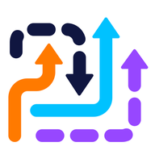

Arrows: Ghost Puzzle
Puzzle · Arrows · Ghosts
A calm yet tricky arrow puzzle. Tap an arrow and it flies away along its path — but only if nothing blocks the way. Every move shifts the "phase": arrows of one colour turn into dashed ghosts and let others pass right through them. Clear cats, rockets, castles and dozens of other pictures made of arrows, beat a boss every 5 levels and climb an endless map.